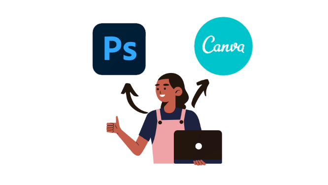
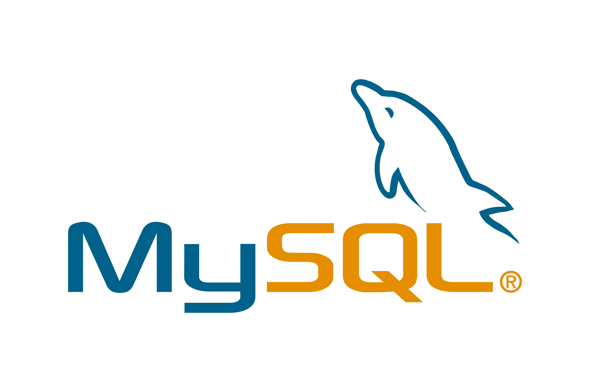

Tecnologias
Introdução
Para desenvolver um bom PPO ou uma boa aplicação é necessário que se escolha bem qual tecnologia será usada. Por isso, neste tópico do Guia, vamos buscar trazer as principais tecnologias usadas nos PPOs de ex-alunos.
Ferramentas de Artes Visuais
Seu projeto não pode ser apenas algo em preto e branco, para isso é necessário que sejam feitas artes
e bons designs em seus projetos, por isso o uso de boas ferramentas de montagem de artes como: o Canva
ou o Photoshop são essenciais no desenvolvimento de um bom design para seu projeto.
💻 Canva:
é uma excelente ferramenta e de fácil uso, além de não precisar baixar, já que a mesma se encontra disponível
para navegadores, o canva também é totalmente gratuito, possuindo apenas algumas recursos extras pagos.
💻 Photoshop:
É uma ferramenta de edição de imagens, é preciso um pouco mais de connhecimento para ser usada, serve como alternativa
para fazer algo mais específico e único dentro do projeto, como por exemplo: a logo do projeto ou personagens de um jogo.
Diferentemente do Canva, o Photshop é uma ferramenta paga e possui mais recursos do que o Canva.
💻 Figma:
Outra excelente ferramenta para design é o figma, totalmente gratuita e para navegador.
Permite colocar membros da equipe junto ao mesmo projeto, possui salvamento automático
, também permite a comunicação dos membros da equipe dentro do próprio design. Outra característica do Figma
é que ele permite o fluxo de telas dentro do projeto, por exemplo ao clicar em um botão, ele direciona para a
outra tela.
Se seu projeto for algo mais simples recomendo o uso do Canva. Já se o seu projeto for algo um pouco mais
complexo, que demande uma necessidade de uma boa arte visual, como um jogo por exemplo, recomendo o uso do
Photoshop.

Frontend
Html & CSS
Começando pela linguagem de marcação de hipertexto, o HTML, ele é responsável pela estrutura básica do website. Ele vai demarcar o que será usado em nosso website. O HTML está presente em toda aplicação dentro da internet. Junto com ele, responsável por sua estilização, está o CSS, ele vai ser responsável pelo o estilo da página, ou seja, com o CSS será possivel determinar, por exemplo quais cores e formatos que minha página deve ter, trazendo um melhor aspecto visual. Junto com esses dois também é possivel fazer uso de frameworks que podem ajudar em melhor estilização da página , por isso, são tecnologias essenciais caso você queira desenvolver um projeto web. Caso você queira melhor conhecer estas tecnologias, recomendamos o livro "HTML & CSS (design and build websites)" do autor Jon Duckett.
Javascript
JavaScript é a linguagem de programação mais popular no desenvolvimento Web. Suportada por todos os navegadores, a linguagem é responsável por praticamente qualquer tipo de dinamismo que se queira em suas páginas. Se usarmos todo o poder que o JavaScript tem para oferecer, podemos chegar a resultados impressionantes. Excelentes exemplos disso são aplicações web complexas como Gmail, Google Maps e Google Docs. O JavaScript possui grande tolerância a erros, uma vez que conversões automáticas são realizadas durante operações.

Frameworks
Um framework pode ser de muita ajuda durante o desenvolvimento, principalmente no frontend da aplicação.
Existem vários frameworks frontend, dentre eles podemos citar:
💻 Angular: Framework mantido pelo Google, ele é responsável construção da interface da aplicação, sua
principal linguagem é o Javascript, apesar de jovem o Angular já possui boas bibliotecas gratuitas
para lhe ajudar no desenvolvimento de sua aplicação. Entre seus elementos vale destacar: os componentes,
templates, módulos e serviços. Para mais informações basta consultar sua documentação.
💻 Bootstrap: É um framework CSS que pode ser usado para otimizar sua página, o Bootstrap foi feito para fácilitar
a estilização de sua página, contendo vários tipo de templates para diversos componentes e funções. Permitindo
que o usuário possa criar seus websites para diversos tipo de tela (desktop ou mobile), sem que seja necessário
criar uma versão distinta para cada. Sua documentação é bastante intuitiva e fácil compreensão.
💻 Materialize: Um dos grandes concorrentes do Bootstrap, o Materialize, tendo foco em UX, ele busca ser uma ferramenta
de design leve, além de possuir um curva de aprendizado bem leve, tendo uma documentação bastante tranquila de se
entender.
Os frameworks citados são apenas alguns exemplos das centenas de frameworks e libraries existentes, cabe a você e
sua equipe decidirem qual terá uma melhor função e que vai melhor ajudá-los em seu desenvolvimento do projeto.
Backend
Java
O Java é uma das linguagens de programação mais famosas do mundo, carregando este titulo a anos
e sua influência parece longe de acabar. O Java não fica apenas restrito ao desenvolvimento de
aplicações para computadores mas ele também pode ser aplicado em desenvolvimento mobile, para
smartphones Android. Pontos interessantes do Java:
💻 Orientada a objetos
💻 Bastante segura
💻 Robusto
💻 Multithreaded (ou seja permite que você crie programas que possua mais de uma linha de
execução simultânea)
Diferente de outras linguagens, Java está sempre em busca de se adaptar e se manter atualizado para as necessidade
dos desenvolvedores. Não só isso Java possui uma enorme comunidade e vários estudos sobre ele, além da
propria documentação e diversos livros que podem ajudar no desenvolvimento de seu projeto, recomendo o livro
"Java - a referência completa" do autor Hebert Schildt.
O JavaScript no Backend
O JavaScript também pode vir a ser usado como backend na sua aplicação, para isso é usado o NodeJS. Por ser bastante leve comparado com outras linguagens de programação backend, o JavaScript pode ser bastante útil para desenvolvimento backend, graças ao NodeJS e seu ambiente server-side. Com isso o JavaScript, pode ser usado não só no frontend (auxiliando em uma melhor estilização e ação na página mas também no backend na construção de aplicações, como API's ou ambientes escaláveis). Como recomendação para consulta deixo os livros "JavaScript - o Guia definitivo" do autor David Flanagan e o livro "JavaScript e Jquery" do autor Jon Duckett. Além da própria documentação MDN web docs - Mozilla.
Mobile
React Native
React Native é uma biblioteca, que permite que seja desenvolvido aplicativos nativos do Android e IOS. Se você tem uma facilidade e conhecimento com JavaScript, seu aprendizado com React Native será fácil, já que o mesmo possui a sua sintaxe baseada no Javascript. Importante frisar que não se deve confudir React Native e ReactJS. React Native é uma biblioteca para desenvolvimento mobile e ReactJS uma biblioteca para construção de interfaces para páginas web.

Flutter
Desenvolvido pelo Google e usando a linguagem Dart. Flutter é outra forte ferramenta para desenvolvimento de aplicações mobile. Usando o Flutter, não só é possivel fazer aplicativos mas também páginas web com um único código. O Dart por se tratar de uma linguagem não tanto popular, nem usada durante o curso, sua curva de aprendizado pode ser um pouco maior do que as demais.
Ionic
O Ionic é uma ferramenta para quem está familiarizado com HTML, CSS e JavaScript, já que o mesmo permite que se crie, aplicações mobile e web com um único código. Com o Ionic é possivel também unir poderoso frameworks de desenvolvimento de interfaces, como o ReactJS, Angular e Vue.
Banco de dados
Firebase
O Firebase é uma ferramenta do Google, ele é um Baas (Backend as a service), usada para o desenvolvimento de aplicativos web ou mobile. Com o Firebase é possível que sua aplicação envie notificações através do cloud messaging e também criar seu banco de dados de maneira prática e dinâmica. Usando uma hospedagem na nuvem, o Firebase faz o sicronismo de dados em tempo real com um banco de dados NoSQL. Todos os dados do database são atualizados em todos os dispositivos conectados em questão de segundos. Mesmo com o dispositivo offline, os dados permanecem disponíveis. O Firebase também oferece o serviço de autenticação. De uma forma segura, a autenticação de usuários pode ser feita até mesmo por confirmação via SMS de forma segura e simples. O Firebase é ideal para você que queira fazer uma simples aplicação ou até mesmo caso você não possua um bom conhecimento com banco de dados a simples implementação do Firebase pode fazer com você ganhe uma boa quantidade de tempo no desenvolvimento de seu sistema. A documentação do Firebase é a ideal e bastante explicativa de como fazer cada atividade que você precisa, mas caso prefira existem diversos tutoriais no YouTube que podem ajudar na implementação.

MySQL
MySQL é um gerenciador de banco de dados relacional que usa a linguagem SQL (Structure Query Language). Sendo um dos database mais populares, o MySQL é reconhecido por flexibilidade e facilidade de uso, por ser totalmente gratuito e de código aberto você pode alterar o código-fonte a vontade. O MySQL também possui um excelente desempenho e uma boa velocidade mesmo operando com uma grande quantidade de dados. Você pode usar o MySQL para qualquer projeto que precise de um database, independente dessa aplicação ser algo mais simples ou complexa e pesada, o MySQL vai atender a sua necessidade. Na internet é possivel encontrar diversos artigos, vídeos de como instalar, usar e aplicá-lo em seu sistema. Como recomendação de livro deixo o "Sistemas de banco de dados" dos autores Ramez Elmasri e Shamkant B. Navathe.

GIT & Github
Para que você e sua equipe possam trabalhar no projeto em paralelo, é necessário que vocês tenham um controle de versão de seus sistemas. Para isso recomendamos o Git e o Github. Já aviso que os dois, apesar de terem nomes parecidos não são a mesma coisa. O Git é um sistema de controle de versão open-source, ou seja, gratuito. Ele é utilizado para a criação de um histórico de alterações em código-fonte de projetos de desenvolvimento de software. Foi desenvolvido por Linus Torvalds, o criador do sistema operacional Linux. Por meio de sua utilização, podemos saber quais foram as alterações realizadas, quem fez cada uma das alterações e baixar essas mudanças em nossa máquina. Se necessário, revertê-las para uma versão anterior. O Github é um serviço de hospedagem remoto, onde é possível colocar seus projetos. Funciona como um servidor que agrega todas as modificações realizadas por cada uma das pessoas envolvidas em um projeto, unificando as diferentes versões de código e seus históricos, permitindo compartilhamento entre as equipes. Além disso, o GitHub também conta com várias integrações com outros serviços online, permitindo o deploy automático de aplicação. Assim, garante a integração contínua e facilita o desenvolvimento. Nos últimos anos, o GitHub se tornou a principal rede social para o desenvolvimento de software, sendo que existem vários projetos open source hospedados na plataforma, que aceitam a colaboração de qualquer profissional. Outro ponto interessante é a sua utilização como currículo. Muitas empresas pedem na entrevista o link do GitHub para verificar seus projetos e entender suas capacidades de programação. A documentação do Github é bastante explicativa e a sua maior parte já está traduzida para português.
Ferramentas de testes
Para que uma software tenha uma boa qualidade, é necessário que seja feito uma análise de seu comportamento,
para isso o uso de boas ferramentas de teste se faz preciso. Algumas ferramentas de testes são:
💻 Selenium:
a ferramenta de teste mais conhecida do mercado por ser open source. É versátil e pode ser utilizada em
aplicações voltadas para web nas plataformas e browsers Linux, Mac e Windows. É compatível com diversas
linguagens de programação:Java; Ruby; PHP; Python; C# e Groovy.
💻 JUnit:
é um framework que facilita o desenvolvimento e execução de testes unitários em código Java. Ele fornece uma
completa API (conjunto de classes) para construir os testes e em modo console para executar
os testes criados, seu único problema é que o mesmo é uma ferramenta exclusiva da linguagem Java.
É possivel encontrar diversa outras ferramentas que podem ajudar a testar seu software de maneira prática
e fácil, a saber: TestComplete(JavaScript e Python), Robotium(para aplicações Android), entre outros.
Conclusão
Referências & links úteis
Link Canva: https://www.canva.com/pt_br/
Link Photoshop: https://www.adobe.com/br/products/photoshop.html
Link tutoriais de HTML: https://www.w3schools.com/html/default.asp
Link tutoriais de CSS: https://www.w3schools.com/css/default.asp
Link Angular: https://angular.io/
Link Bootstrap: https://getbootstrap.com/
Link Materialize: https://materializecss.com/
Link Java: https://docs.oracle.com/en/java/
Link JavaScript: https://developer.mozilla.org/pt-BR/docs/Web/JavaScript
Link NodeJS: https://nodejs.org/pt-br/docs/
Link Firebase: https://firebase.google.com/docs
Link MySQL: https://dev.mysql.com/doc/
Link GIT: https://git-scm.com/
Link GitHub: https://github.com/
Link Selenium: https://www.selenium.dev/
Link JUnit: https://junit.org/junit5/